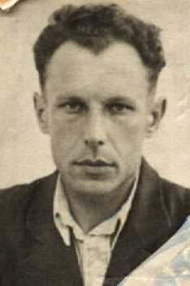

Первый директор школы - Пичугин Валентин Анатольевич
Родился в городе Белый Смоленской области.
Валентин Анатольевич был призван в 1940 году, прошёл всю войну, был дважды ранен, получил Орден Красной Звезды за выполнение особых заданий Командования, за доблесть и мужество. После войны получил специальность - учитель. Дошел до Директора школы,
переведен в Министерство Просвещения СССР,
получил Звание Заслуженный учитель СССР.